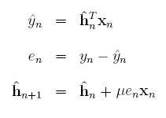

Real-Time DSP DevelopmentThis was originally submitted to C Users Journal for publication, but the magazine was cancelled. I wrote about this previously. IntroCompleting an Embedded Real-Time DSP project can be a rewarding experience. Researching algorithms to solve a problem through implementing them on a DSP and verifying operation in a real environment is quite a challenge. As I worked through this process to complete my degree, I learned some valuable development and testing strategies. For the remainder of the article, I will share my experiences using the well-known Least Mean Squares (LMS) algorithm. LMS AlgorithmA common problem with telephone calls is acoustic and electrical echo. In the acoustic case, speech from the loud speaker of a hands free phone reverberates through the room and feeds back into the receiver. A good echo canceller will remove the signal and all noticeable echoes, leaving only noise and speech from within the room to pass through the receiver. Knowing both the original speech and the echoed version makes it possible to solve for a filter model of the room. The equations can be simplified and made adaptive, resulting in the elegant LMS equations. The first step is a one-sample filter operation. The second step finds the error, which is the signal with the removed echo. The last step adapts the filter. This set of equations is run for each new input sample, generating one new output sample. Development ProcessAs you're researching algorithms, keep in mind time and memory constraints of the processor. Know the frequency, instructions per cycle, on-chip memory size, and be familiar with optimized DSP routines that have already been written. Most DSP Algorithms can be written almost entirely from basic building blocks such as the Fast Fourier Transform (FFT), dot products, vector-scalar multiplies, vector-scalar additions, and FIR and IIR filtering. If you're able to massage all of the important components of the algorithm into these optimized routines, you can come appreciably close to the theoretical computational limits that CPU makers love to advertise. And the best part is, there's no need to touch assembly. Development of real-time embedded numerical algorithms requires a disciplined approach. If you fail to break up the implementation into several carefully tested pieces, you may find yourself repeatedly in the frustrating position of knowing neither how nor where to begin the debug process. Below I've laid out a suggested sequence to follow.
(1) Research algorithms, DSP architecture and routines. If there's any chance your algorithm or code will change based on the results of real-time tests, you'll want to make these changes in steps one to five. MATLABListing 1 below shows the MATLAB driver for the LMS code. It first allocates space for temporary and output arrays. Then it reads the MATLAB native double arrays into the buffers to be processed, converting to single precision on the way. It's important to use the same types in MATLAB and on the DSP wherever possible. This makes it easy to compare the two, and it also lets you use the same code on both targets. The reduceEcho function runs LMS over the entire buffer and leaves the results in errorFLT. The next statement calculates the start address of the next buffer. I'll explain this after you see the LMS code. | ||
function [error,c]=testEchoCancel(reference,input)
Laec=1024;
BUFFER_COUNT=256;
clear mex;
s=size(reference);
error=zeros(s);
c=zeros(Laec,1);
for k=BUFFER_COUNT:BUFFER_COUNT:length(reference)
[error(k-BUFFER_COUNT+1:k,:),c]=echocancel(reference(k-BUFFER_COUNT+1:k),
input(k-BUFFER_COUNT+1:k,:),c);
end
| ||
|
The MATLAB wrapper in listing 2 below reads the signal one buffer at a time from a MATLAB array and runs LMS. In the real-time version, the processor would be interrupted every time the buffer were filled with new samples. I have allocated space for the filter at the MATLAB level because it's easier to initialize it here then deal with initialization in a mex file. And even though it's not used for echo cancellation, another application may require it. One thing to notice is the length of the buffer. A short buffer will lead to greater loop overhead and more processor interrupts. A long buffer requires more memory and increases latency. I have chosen 256 samples with the assumption that the sample rate is 8000 samples per second. This would not cause a noticeable delay in the output, and each second is broken into only about 31 frames to process. | ||
void mexFunction(int nlhs, mxArray *plhs[], int nrhs, const mxArray *prhs[]) { static int refFrame=0; double *referenceDBL, *inputDBL, *outDBL, *cDBL, *coutDBL, *errorDBL; const mxArray *reference, *input, *c; mxArray *error, *cout; int i; /* Temporary reference to matlab data structures. */ reference=prhs[0]; /* original (without echo) */ input=prhs[1]; /* with echo */ c=prhs[2]; /* adaptive filter */ /* Allocate arrays and retrieve array pointers. */ referenceDBL=mxGetPr(reference); inputDBL=mxGetPr(input); cDBL=mxGetPr(c); error=mxCreateDoubleMatrix(BUFFER_COUNT,1,mxREAL); errorDBL=mxGetPr(error); cout=mxCreateDoubleMatrix(FILTER_LEN,1,mxREAL); coutDBL=mxGetPr(cout); rhs[0]=mxCreateDoubleMatrix(FILTER_LEN,1,mxREAL); rhs[1]=mxCreateDoubleMatrix(FILTER_LEN,1,mxREAL); /* Convert from double to single. */ for(i=0; i<BUFFER_COUNT; i++) { referenceFLT[i+refFrame]=referenceDBL[i]; inputFLT[i]=inputDBL[i]; cFLT[i]=cDBL[i]; } /* Run LMS, then move to the next frame. */ reduceEcho(refFrame,referenceFLT,inputFLT,cFLT,errorFLT); refFrame=(refFrame+BUFFER_COUNT)&(FILTER_LEN-1); mxDestroyArray(lhs[0]); mxDestroyArray(rhs[0]); mxDestroyArray(rhs[1]); /* Convert back to double and return the results. */ for(i=0; i<BUFFER_COUNT; i++) errorDBL[i]=errorFLT[i]; for(i=0; i<FILTER_LEN; i++) coutDBL[i]=cFLT[i]; if(nlhs>0) plhs[0]=error; else mxDestroyArray(error); if(nlhs>1) plhs[1]=cout; else mxDestroyArray(cout); } | ||
LMS ImplementationThe code in listing 3 is a straight forward implementation of the LMS equations except that the filter is reversed to save on index calculations. The restrict qualifier tells the optimizing compiler that none of the memory spaces of these pointers overlap. The outermost loop runs LMS 256 times, generating 256 samples with echo hopefully removed. The expression in the index of reference is quite ugly, but if the compiler is doing its job right, it should remove invariants from the loop. | ||
void reduceEcho(int refFrame, float * RESTRICT reference, float * RESTRICT input, float * RESTRICT c, float * RESTRICT error) { int i,j; float sum,step; for(j=0; j<BUFFER_COUNT; j++) { for(i=0,sum=0; i<FILTER_LEN; i++) sum+=c[i]*reference[(i+refFrame+j)&(FILTER_LEN-1)]; error[j]=input[j]-sum; step=MU*error[j]; for(i=0; i<FILTER_LEN; i++) c[i]+=step*reference[(i+refFrame+j)&(FILTER_LEN-1)]; } } | ||
|
Now things get tricky. There is a problem with finding the correct index into the reference buffer. The filter is four times the length of the input buffer. This means it's necessary to store the last three frames of input. The unexplained statement in listing 1 calculates which of the four consecutive frames the newest samples are read into. And as if that weren't ugly enough, the array addressing is circular. This is a common theme in DSP. It means the start and end of the array are actually located right next to each other instead of at the beginning and end of the array. At each sample, I take the dot product of the filter and the reference signal. On the next iteration, the starting point is incremented one sample in the reference array. The oldest samples are actually located just before the start of the current buffer, not at the end of the array. And before the algorithm runs again, the old samples will be overwritten with new ones. There still needs to be a way to calculate the circular addresses. One way is to simply use an if statement on the index, and wrap to the beginning after the last element. That might produce ugly code. If all your buffers are powers of two and your processor supports it, you can use a circular addressing register. If that doesn't appeal to you, the same result is achievable by taking the bitwise AND with the buffer size minus one. That is what I have done here. First RevisionOnce the code is working and verified, replace the c-coded common DSP routines with the optimized ones. Sometimes this is easy and sometimes it's not. Because I forgot to do my homework at step 1 of the suggested development sequence, I didn't find out until 4a that this example would be more work than I planned. My code did not meet the assumptions of the dot product routine. Fortunately I only had to make some modifications for it to work with my code. The function requires both arrays to be aligned on eight bytes. This is not an option because the dot product has to start at every sample, and samples are only separated by four bytes. So I made a second routine which requires the first array to be eight byte aligned but shifted four bytes. This routine has the extra requirement that the arrays have lengths of multiples of four. I just padded the ends of the arrays with zeros so the result will always come out right. The code in listing 4 breaks the dot product up into two cases. If the dot product starts at an even sample in reference, use the original function; otherwise, use mine. Each of these two cases is broken into two further cases. This is because the optimized functions don't use circular addressing. So the loops have been split. The remaining new code just finds the start index and dot product length. | ||
void reduceEcho(int refFrame, float * RESTRICT reference, float * RESTRICT input, float * RESTRICT c, float * RESTRICT error) { int i,j,dlen,tmp; float sum=0,step=0; for(j=0; j<BUFFER_COUNT; j++) { #if TARGET==MATLAB if((mxGetPr(rhs[0])==0) || (mxGetPr(rhs[1])==0)) return; for(i=0; i<FILTER_LEN; i++) { *(mxGetPr(rhs[0])+i)=reference[(i+refFrame+j)&(FILTER_LEN-1)]; *(mxGetPr(rhs[1])+i)=c[i]; } mexCallMATLAB(1,lhs,2,rhs,"dot"); sum=mxGetScalar(lhs[0]); #else /* Calculate where to start the dot product. */ dlen=FILTER_LEN-((j+refFrame)&(FILTER_LEN-1)); /* If it's even, use the orignal version. */ if(j%2==0) { sum=DSPF_sp_dotprod(&reference[(j+refFrame)&(FILTER_LEN-1)],c,dlen); /* Complete the dot product from the start of reference. */ if(dlen<FILTER_LEN) sum+=DSPF_sp_dotprod(reference,&c[dlen],FILTER_LEN-dlen); } else { /* It's odd. Round the length up to the next multiple of four. */ if((dlen%4)!=0) tmp=dlen-(dlen%4)+4; else tmp=dlen; sum=DSPF_sp_dotprod2(&reference[(j+refFrame)&(FILTER_LEN-1)],c,tmp); /* Complete the dot product from the beginning of reference. */ if(dlen<FILTER_LEN) { /* Make the length a multiple of four again. */ if(((FILTER_LEN-dlen)%4)!=0) tmp=FILTER_LEN-dlen-((FILTER_LEN-dlen)%4)+4; else tmp=FILTER_LEN-dlen; sum+=DSPF_sp_dotprod2(&c[dlen],reference,tmp); } } #endif error[j]=input[j]-sum; step=MU*error[j]; for(i=0; i<FILTER_LEN; i++) c[i]+=step*reference[(i+refFrame+j)&(FILTER_LEN-1)]; } } | ||
|
Table 1 compares compiler optimizations of the algorithm to using the optimized functions. Even for such a simple function, there is a significant speed up. This isn't the whole story, however. The compiler generates detailed output of its optimizations. It even tells you a little about how it did the optimization. You can use that information in combination with special pragma directives to help the compiler optimize your loops. Table 1 Dot Product* Optimization|None|Level 2|Level 3|Human Assembled ------------|----|-------|-------|--------------- cycles/ |14 |1.25 |1.25 |.5 iteration *This does not consider loop overhead and code length. Fortunately, I did do my homework at steps 3b and 4b. After a number of attempts to get the modified dot product routine working and the index calculations correct, it was immediately obvious when I did it correctly. The error between tests came up zero and I knew I was ready to move on. IntrinsicsSuppose instead of using LMS, I had chosen to implement the Normalized LMS. This algorithm requires a division each time the filter is updated. If your processor doesn't have division, this could mean an expensive software routine. And even worse, it will ruin software pipelining. The c6000 series has such a problem, but it also has an inverse approximation instruction, RCPSP. Using RCPSP with two short iterations of Newton-Rhapson you can get the true inverse. You can gain access to this instruction using what's known as instrinsics. These are just special c level functions that tell the compiler to insert the assembly instruction you want. For my work, I made separate INVERSE macros for the MATLAB and DSP targets. That way I get normal division in the mex file and the intrinsic version on the DSP target. Intrinsics are one more option you have for controlling what goes on at the assembly level without actually having to write assembly. ConclusionKnow your processor and your algorithms. Start with high level code first, and work your way down to the assembly level. Use optimized DSP routines wherever possible. If that fails, you can use special directives to help the compiler optimize your code. Resort to assembly only when it becomes absolutely necessary. Generate verification tests at each stage of development. By following these steps, when something goes wrong, you'll have some assurance that it's an electonics or acoustics problem and hopefully not your code. | ||